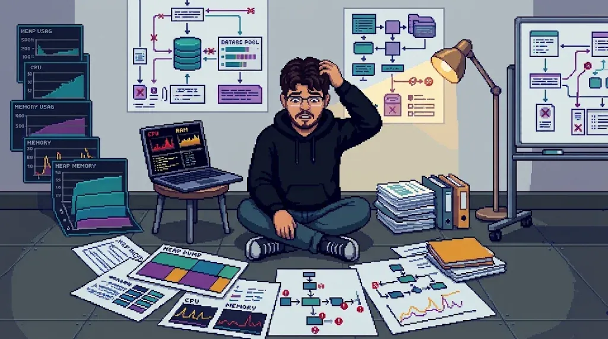

Associate Solutions Engineer
Jun 2026 – now · Virginia

- Isolate and fix complex platform issues by reading logs with Linux and networking tools.
- Wrote Python and Bash scripts that speed up incident response and monitoring.
- Keep enterprise partners informed during high-pressure escalations.